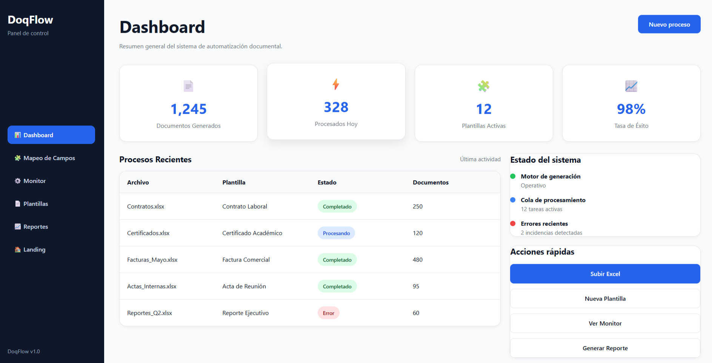

Conecta tus archivos Excel con plantillas Word o PDF y genera cientos de documentos sin copiar y pegar. Eficiencia arquitectónica para flujos de trabajo modernos.

Muchas organizaciones siguen gestionando documentos de forma manual, generando retrasos, errores y altos costos operativos.
Los equipos invierten gran parte de su tiempo copiando y pegando información entre documentos.
Un pequeño error puede replicarse en cientos de documentos y afectar procesos completos.
La dependencia de procesos manuales incrementa los costos y reduce la productividad.
Automatiza la generación masiva de documentos mediante un proceso simple y eficiente.
Importa el archivo que contiene los datos que deseas utilizar.
Elige una plantilla Word o PDF previamente diseñada.
Relaciona cada columna del Excel con las variables del documento.
Obtén automáticamente cientos de documentos completos.
Optimiza la gestión documental y aumenta la productividad mediante procesos automatizados.
Reduce significativamente el tiempo dedicado a tareas repetitivas.
Minimiza inconsistencias y errores causados por procesos manuales.
Genera cientos o miles de documentos sin aumentar el esfuerzo.
Compatible con Excel, Word y futuros sistemas empresariales.
DoqFlow puede adaptarse a múltiples áreas donde la generación masiva de documentos es una necesidad frecuente.
Herramientas empleadas para el desarrollo y funcionamiento de DoqFlow.
Estructura de la aplicación web.
Diseño visual y experiencia de usuario.
Lógica e interacción de la plataforma.
Fuente principal de datos.
Plantillas y documentos generados.
Preparado para futuras integraciones.
Flujo de procesamiento utilizado para transformar datos estructurados en documentos generados automáticamente.
DoqFlow permite optimizar la gestión documental, reducir errores y aumentar la productividad mediante la automatización inteligente de documentos.
Volver al Inicio ↑